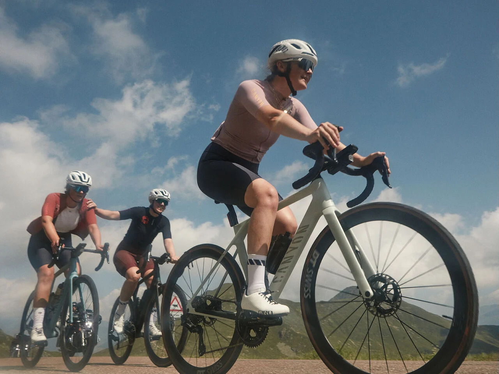
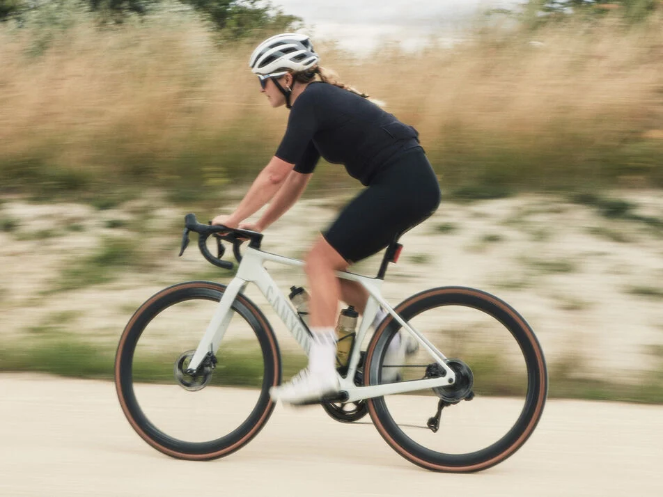

L’Endurace redéfinit sa propre catégorie en brouillant les frontières entre confort, vitesse et performance avec un pilotage dynamique accessible à tous.
Combinant une réactivité inspirée de la course avec un ajustement stimulant l’endurance et des caractéristiques modernes telles qu’un dégagement large des pneus et une intégration élégante, l’Endurace est à la pointe du confort et de la vitesse, prêt à affronter n’importe quelle route.
Il faut beaucoup d’intelligence pour concevoir les vélos les plus rapides pour les meilleurs cyclistes du monde. L’Endurace CFR ne fait pas exception. Conçu et optimisé par les mêmes designers, experts en fibre de carbone et aérodynamiciens que l’Aeroad CFR de Mathieu van der Poel, l’Endurace CFR offre une vitesse digne du World Tour dans des conditions réelles. C’est l’Endurace le plus rapide que nous ayons jamais fabriqué.
Toutes les innovations de notre famille Endurace ont été développées dans la poursuite d’un seul objectif : le vélo parfait. Rapide. Agile. Confortable. Découvrez ce qui fait de l’Endurace le vélo idéal pour répondre aux exigences du cycliste de route moderne.
L’Endurace allie confort et vitesse comme ce n’est pas permis ; ça devrait être interdit par la loi.
Tous les modèles Endurace bénéficient de la même approche en matière d’ajustement axé sur l’endurance, de dégagement moderne de pneus tout-terrain et de tailles inclusives. Chaque cycliste peut ainsi trouver l’équilibre parfait et atteindre un maximum de vitesse sur n’importe quelle route.
